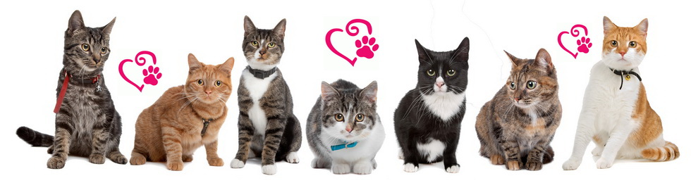
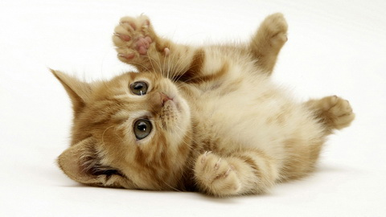
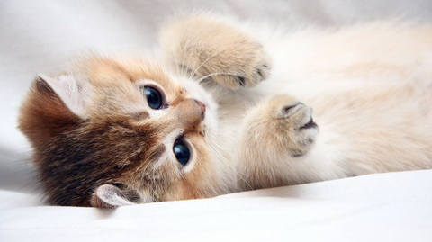

Deset neuobičajenih načina na koje vam mačke pokazuju ljubav!
1. Ujedaju vas!
Grickanje ili “ujedanje iz ljubavi” samo je još jedan od načina, pomalo čudnih, da vam mačka pokaže naklonost.
2. Ližu vas!
Mačke se ponekad i međusobno “umivaju”, ali samo sa onim mačkama koje one obožavaju. Lizanjem “omiljenog ljudsog bića” mačka ostavlja miris i označava vas kao deo porodice.
3. Mjauču!
Mjaukanje ponekad može da bude vrlo slatko, ali ponekad mačje vokalizacije mogu prerasti u one iritirajuće. Zapravo, one uopšte i ne žele da nas izlude. Mačke mjaukanjem ne komuniciraju međusobno, već isključivo sa ljudima.
4. Gaze vas!
Kada mačka gazi određene delove vašeg tela, kao da vas “mesi”, ona time izražava najdublju naklonost i ljubav. Ovo ponašanje je zapravo instinktivno iz najranijeg perioda, kada mačići šapicama stimulišu lučenje mleka svoje majke. Odrasle mačke nastavljaju sa ovakvim ponašanjem kada se osećaju najopuštenije, zadovoljno i voljeno.
 5. Zure u vas!
Iako možda deluje zastrašujuće, zapravo imate retku privilegiju. Mačke ostvaruju kontakt očima samo sa ljudima od poverenja. A kada maca trepne, šalje vam poljubac. Trepnite i vi da joj uzvratite!
6. Upada vam u spavaću sobu!
Mačka ne razume pojam privatnosti. Zaslepljene ljubavlju, mnoge mačke ne mogu da podnesu pomisao da spavaju odvojeno od svojih vlasnika.
7. Pokazuje vam zadnjicu!
Iako nije baš prijatno da vam mačka pokazuje zadnjicu dok nešto radite, ali zapravo, ovakvim ponašanjem one pokazuju naklonost i poverenje.
8. Leži na vašem kompjuteru!
Mačke obožavaju da budu u centru pažnje, pa je ovo samo još jedan način da vam kaže: “Hej, gledaj u mene! Ja sam vrlo važna!”
9. Špijunira vas ispod vrata od kupatila!
Kupatilo je jedino mesto gde zapravo imate privatnosti… Osim ukoliko ste ponosni vlasnik mačke, onda ste sigurno primetili šapice ispod vrata kako vas traže. Ovakvo ponašanje je potpuno prirodno iskazivanje ljubavi.
10. Grebe nameštaj!
Nas potpuno iritira kada nas mačka gleda pravo u oči dok šapama grebe kauč, ali zapravo je grebanje prirodno ponašanje kojim mačka pokazuje naklonost. Zapravo, ona tako ostavlja vizuelne tragove “vlasništva” na vašoj omiljenoj fotelji.